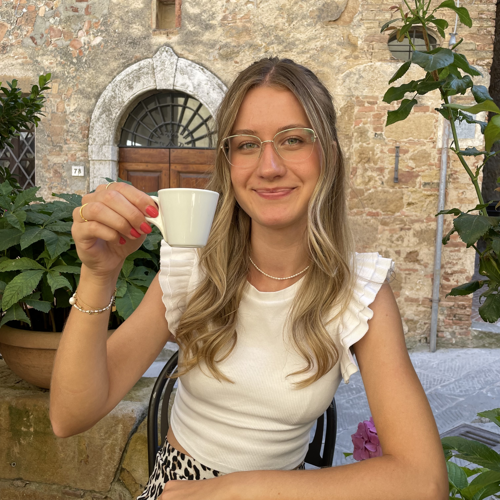

Ciao Ragazzi!
"Willkommen bei meinem Reiseblog über das Reisen durch die wunderschöne Toskana. Hier möchte ich euch einen Geschmack der einzigartigen Atmosphäre Italiens vermitteln. Mit einem analogen Reiseführer in der Hand und der beeindruckenden Kulisse des Rathausplatzes in Florenz im Hintergrund, lade ich euch ein, mit mir die Magie und den Charme dieser bezaubernden Region zu entdecken. Lasst uns gemeinsam die historischen Schätze, die malerischen Landschaften und die kulinarischen Köstlichkeiten der Toskana erkunden. Buon viaggio!"
"Ciao, ich bin Sonja, die Reisende hinter diesem Blog! Mit einem Café in der Hand und einem Herzen, das für Italien schlägt, teile ich hier meine Leidenschaft für die wunderschöne Toskana. Ich liebe es, durch die verwinkelten Gassen zu schlendern, versteckte Schätze zu finden und die kleinen, feinen Momente des Lebens einzufangen – sei es der Duft von frisch gebrühtem Kaffee oder die unvergesslichen Ausblicke auf malerische Landschaften. Kommt mit auf meine Reise, lasst euch von meinen Geschichten und Bildern inspirieren und entdeckt Italien aus meiner Perspektive. Ich freue mich darauf, meine Eindrücke mit euch zu teilen!"
